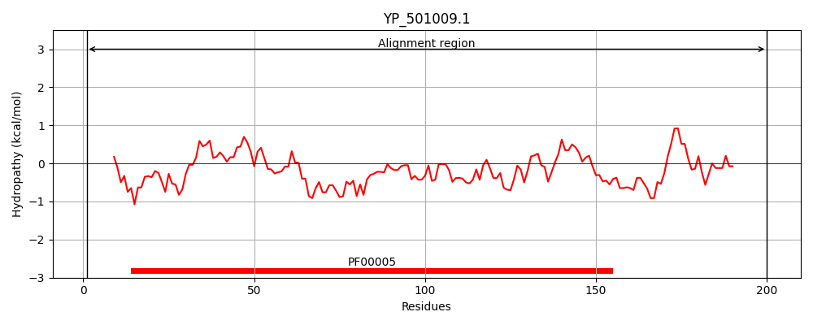
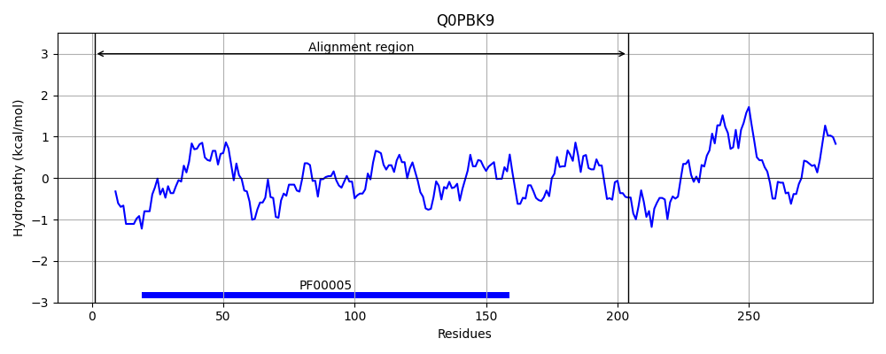
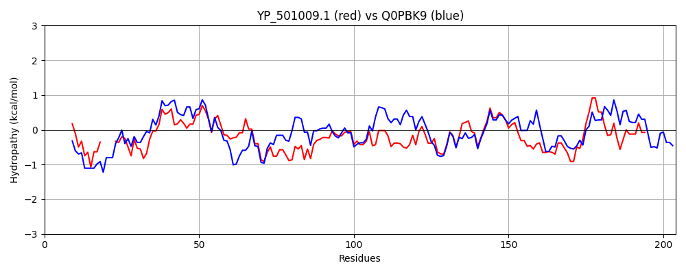

Hit Accession: Q0PBK9
Hit TCID: 3.A.1.8.4
Hit Description: gnl|BL_ORD_ID|12472 gnl|TC-DB|Q0PBK9|3.A.1.8.4 Putative molybdenum transport ATP-binding protein OS=Campylobacter jejuni subsp. jejuni serotype O:2 (strain ATCC 700819 / NCTC 11168) OX=192222 GN=modC PE=4 SV=1
Mach Len: 204
e:0.000000
Query TMS Count : 0
Hit TMS Count: 0
TMS-Overlap Score: 0.000000
Predicted Substrates:CHEBI:63940;sodium tungstate, CHEBI:6967;molybdate
BLAST Alignment:
Score: 375 , Bit scores: 149 bits, E-value: 2.1e-44, Alignment length: 204, Percentage identity: 38
Query: 1 MLKINVKYQLKNTLIRINI----DDTEPKIYAVRGPSGIGKTTVLNMIAGLRKADEAIIEVNGQLLTDTAKNVNVKIQQRRIGYLFQDYQLFPNMTVYKNITFMAEPSEHIDQLIQTLNIDHLMKQYPMTLSGGEAQRVALARALSTKPDLILLDEPFSSLDDTTKDESITLVKRIFNEWQIPIIFVTHSNYEAEQMAHEIITI 200
M++I++ + + R+++ D KI A+ G SG GKTT+L +IAGL K IEV+ +L D++KN ++ +Q+R+IG++FQDY LFPNM + +NI + A + +L+ + +++L K YP LSGG+AQRVALARAL+ +P ++LLDEP S+LD + + +I ++I + V+H E +++H I+ +
Sbjct: 1 MIRIDINHPMNTAKGRLDLNFKKDIESGKITALFGESGAGKTTLLKIIAGLIKPKLGRIEVDNELWFDSSKNFSLALQKRKIGFVFQDYALFPNMNIKENIAYAASSKAKVSELLALMKLENLAKIYPKHLSGGQAQRVALARALAREPKILLLDEPLSALDFKMRANLQDELTKILEYFKISTLLVSHDLAEIYKLSHRILEL 204 | Protein Hydropathy Plots: |
|---|
|  |  |
Pairwise Alignment-Hydropathy Plot:
|
|---|
|  |